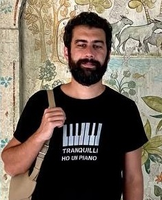

Chi sono
Mi chiamo Pietro Viglino e sono nato ad Asti nel 1988. Prima di trasferirmi a Genova ho vissuto a Neive, un piccolo paese delle Langhe, nelle vicinanze di Alba. Sono il secondo di tre fratelli. Mi sono diplomato al Liceo Classico San Paolo di Alba nel 2007. Ho lavorato fino al 2022 nell'azienda di famiglia, Dante Viglino Marmi, situata a Neive. Negli anni ho fatto diverse altre esperienze lavorative nei settori più diversi: dall'apicoltura alla viticoltura, all'insegnamento della musica, alla fabbrica. Da bambino ho iniziato a studiare il pianoforte per poi negli anni dell'adoloscenza abbandonarlo momentaneamente e dedicarmi ad altri strumenti. Una volta finito il liceo ho ripreso più seriamente lo studio degli strumenti a tastiera, prendendo lezioni di pianoforte e organo all'Istituto Civico Musicale Lodovico Rocca di Alba.
Programmazione
All'inizio del 2023 ho deciso di trasferirmi a Genova per raggiungere la mia compagna, una monferrina trasferitasi in Liguria per lavoro. Qua ho avuto la fortuna, grazie al consiglio di alcuni amici programmatori, di avere l'opportunità di partecipare al corso di Programmazione Front End tenuto dall'agenzia di formazione e consulenza Axìa. Negli anni precedenti, mosso da curiosità, avevo sperimentato con HTML, CSS e JavaScript ma è soltanto partecipando a questo corso che ho iniziato veramente ad immergermi nel mondo della programmazione.
Le mie passioni
A Genova vivo con la mia ragazza e il suo splendido cagnolino Giotto, un meticcio di cinque anni con un carattere da fare invidia ad una star hollywodiana. Quando torno in Piemonte invece ad aspettarmi ci sono le mie due gattine, Bianchina e Tigratina.
Per quanto riguarda la musica, faccio parte del gruppo musicale Follia Nuda, sotto l'etichetta mArte Label, e collaboro con lo storico gruppo torinese Loschi Dezi. Quando sono da solo però coltivo il mio amore per la musica classica e specialmente quella di Johann Sebastian Bach, allo studio della quale ho dedicato più di dieci anni.